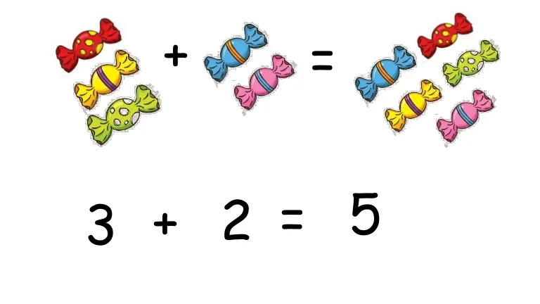

What Is Addition?
Addition is a way of combining things and counting them together as one large group.

Addition in math is a process of combining two or more numbers. Addends are the numbers added, and the result or the final answer we get after the process is called the sum. It is one of the essential mathematical functions we use in our everyday activities. There are many situations in which we use to add numbers. One of the most common everyday uses for adding numbers is when we work with time or money—for example, adding up bills and receipts.
The addition symbol used to indicate adding numbers is “+” (also called the plus symbol). For example, we read as “5 plus 3”.
An addition sentence is a mathematical expression that shows two or more values added together and their sum. The two or more values that are added are called addends. The parts of an addition sentence are two or more addends, plus symbol(s), equal sign, and the sum.
To add small numbers can be done using your fingers.
Example:
Addition On Fingers
Using The Number Line
We can use the number line to add.
Let us look at the following addition example.
To add 5 and 7, we can count forward 7 steps from 5, as shown below.
Addition on a Number Line
Using The Number Grid
Number chart is another way to add numbers.
Example: Add 57 and 16 using a hundred grid.
Step 1: Locate the bigger number .
Step 2: If the number to be added is more than 10, break it into tens and ones. .
Step 3: Jump as many 10s as in the second number.
Step 4: Move forward as many ones as in the second number.
.
The number reached is the answer.
So,
Addition –
Definition With Examples Vertical Addition While solving the problem, we can add the numbers vertically. Here, we arrange the numbers vertically using their respective place values, like ones, tens, hundreds, thousands, etc. We start adding from the right side (or digit at ones or unit place). While solving such problems, we may come across some cases with regrouping and some without regrouping.Let us understand with the help of examples.
Addition without Regrouping
Example: Add 41 and 26.
Step 1:
Write the numbers one below the other as per the places of the digits. Add 41 and 26Step 2:
Start adding from the digits in ones place . Write the sum under the ones digit. Addition of 41 and 26Step 3:
Add the tens digits .Addition with Regrouping
Example: Add 57 and 16
Step 1:
Write the numbers below the other as per the places of the digits. Addition – Definition With ExamplesStep 2:
Start adding from the digits in ones place . If the sum of the ones digit is greater than 9, write the ones digit of the sum under the ones and carry forward its tens digit to the tens column. Addition of 57 and 16Step 3:
Add the tens digits. If there was a carry-forward digit, add it along. (carryover) Addition with RegroupingFun Fact
Adding zero to a number gives the number itself.Adding 1 to a number gives the successor of that number.
Changing the order of the addends does not change the sum. For example,
Solved Examples
Question 1:
What is the sum of the first 10 odd numbers?Answer:
The first ten odd numbers are . The sum of the first ten odd numbersQuestion 2:
If a bag has 5 balls and 4 more balls are added to it, how many balls are there in the bag?Answer:
Originally, there were 5 balls in the bag. Now 4 more balls have been added. The number of balls in this bag is now . Therefore, the bag has 9 balls.Question 3:
The present age of Manny is 7 years. What will be his age after 10 years?Answer:
Current age of Manny is 7 years. To find Manny’s age after 10 years, add 10 to his current age. After 10 years, his age would be or 17 years old.Question 4:
Samantha bought a bag for 214 and some books for 149. How much did she spend on both?Answer:
To find the total cost, add 214 and 149. Add 214 and 149 Thus, Samantha spent 363 in all.Conclusion
Adding numbers is a fundamental mathematical process that combines two or more numerical values. We use this operation in our daily lives; some easy examples are calculating money, calculating time, counting students in a class, etc. The symbol of this operation is a ‘+’ (plus sign). Visit SplashLearn to learn more math facts.ADDITION OF TWO NUMBERS
View Result: